The growing integration of robots in shared environments—such as warehouses, shopping centres, and hospitals—demands a deep understanding of the underlying dynamics and human behaviours,
including how, when, and where individuals engage in various activities and interactions. This knowledge goes beyond simple correlation studies and requires a more comprehensive causal analysis.
By leveraging causal inference to model cause-and-effect relationships, we can better anticipate critical environmental factors and enable autonomous robots to plan and execute tasks more effectively.
To this end, we propose a novel causality-based decision-making framework that reasons over a learned causal model to predict battery usage and human obstructions, understanding how these factors
could influence robot task execution. Such reasoning framework assists the robot in deciding when and how to complete a given task.
To achieve this, we developed also PeopleFlow, a new Gazebo based simulator designed to model context-sensitive human-robot spatial interactions in shared workspaces.
PeopleFlow features realistic human and robot trajectories influenced by contextual factors such as time, environment layout, and robot state, and can simulate a large number of agents.
While the simulator is general-purpose, in this paper we focus on a warehouse-like environment as a case study, where we conduct an extensive evaluation benchmarking our causal approach against a
non-causal baseline. Our findings demonstrate the efficacy of the proposed solutions, highlighting how causal reasoning enables autonomous robots to operate more efficiently and safely in dynamic
environments shared with humans.
Idea
Imagine a mobile robot in a busy warehouse. To get its job done efficiently, it cannot just react to people—it needs to anticipate them.
To go beyond simple obstacle avoidance, our system learns from cause and effect. It considers
context (e.g., time of day and room layout) to anticipate human patterns and act more intelligently.
Here, the robot has a target. It knows two routes: the direct but busy red path and the longer blue path through the canteen.
Using its causal knowledge, the robot reasons that since it is not lunchtime, the canteen will be empty and correctly chooses the blue path to avoid collisions and delays.
➡ Enhanced human safety and robot efficiency
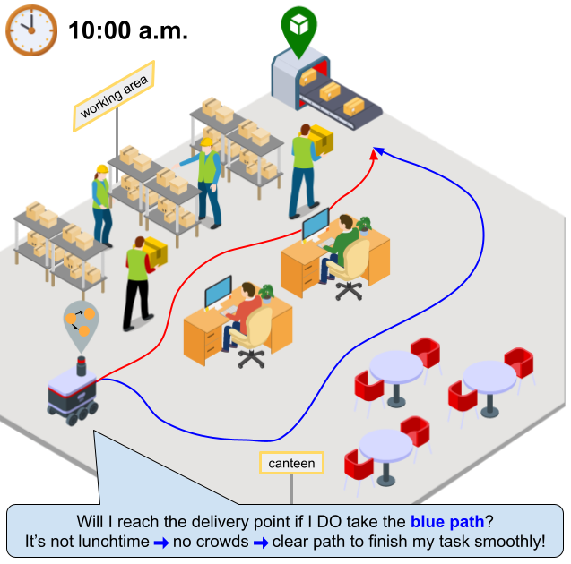
Causality-based Robot Decision Making Framework
Data Extraction Pipeline
The data extraction pipeline continuously gathers information about the robot, humans, and contextual factors from the environment.
The collected data is then preprocessed through subsampling to manage volume and discretisation to prepare it for the learning
and inference components. For real-time inference, data is processed and used directly without being stored.
Learning Pipeline
The learning pipeline is responsible for discovering the underlying causal relationships from the processed data and then
learning the parameters of the model. It uses a causal discovery method, such as J-PCMCI+
(from CausalFlow),
to identify the causal structure from time-series data containing contextual variables and a
Maximum Likelihood Estimation (MLE) to estimate the conditional probability distributions
for each node in the discovered causal graph.
Inference Pipeline
The inference pipeline enables the robot to make decisions by using the learned causal model to evaluate its actions.
When assigned a task, the robot formulates a query as a causal intervention, such as,
"What if I go to the delivery point now at velocity v?". The pipeline then estimates the expected outcomes,
specifically the battery consumption and people density. These estimates are incorporated into a heuristic that guides the
A* algorithm to find an optimal path and decide whether to execute or abort the task.
PeopleFlow
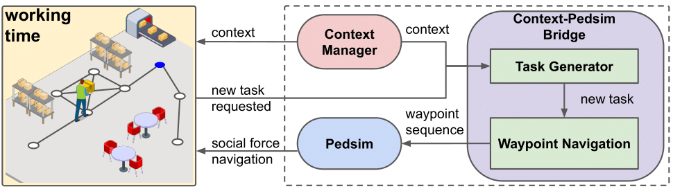
PeopleFlow is a novel, Gazebo-based simulator designed to create realistic and repeatable scenarios of human-robot spatial interactions (HRSI).
Its key feature is the ability to model context-sensitive behaviours, where factors like the time of day dynamically influence the goals and
interaction patterns of both humans and robots. It includes a TIAGo robot
and can simulate a large number of human agents.
The simulator's architecture is built on ROS and Gazebo, using the pedsim_ros library to model human movement based on a social force model.
Its novelty lies in two new ROS nodes: the Context Manager, which governs scenario-specific factors like time, and the Context-Pedsim Bridge,
which generates tasks and navigation plans for agents based on the current context.
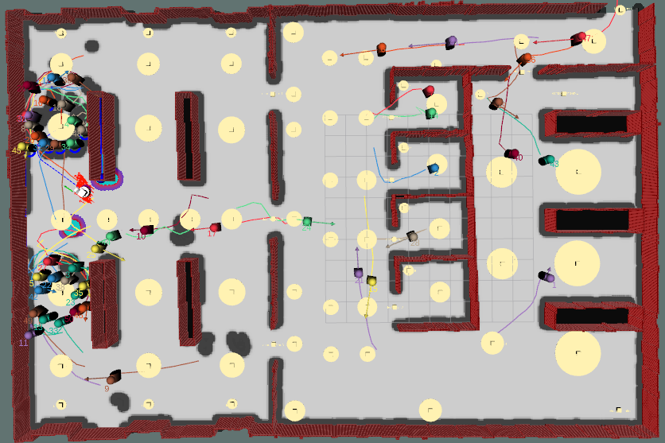
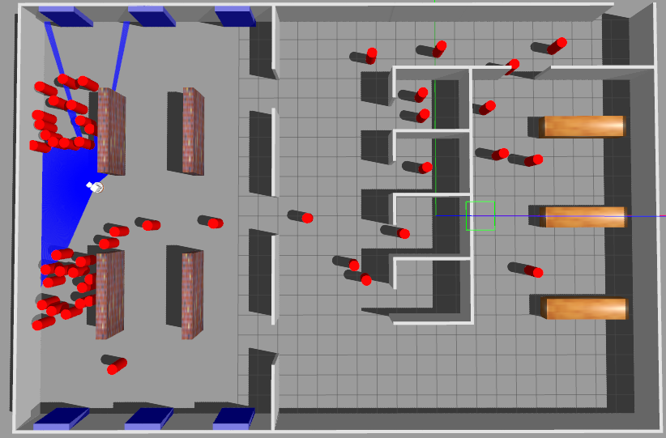
Case study: warehouse-like environment.
This simulated space consists of a working area, a canteen, offices,
toilets, and a corridor connecting them. human congestion and robot tasks
change based on the time of day, creating realistic, context-sensitive
challenges for the robot's navigation.
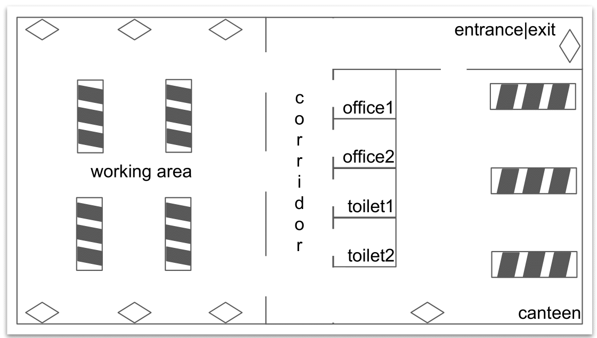
Causality-based Robot Decision Making in PeopleFlow
Causal Inference
To complete its tasks, the robot first queries our framework by asking "what-if" questions, like
"What if I go to the delivery point now at velocity v?".
This allows it to estimate critical factors like battery consumption (L) and density of people (D)
in different areas of the environment.
Heuristic
The robot uses a custom heuristic to find the best path.
By considering the estimated battery cost and crowd density for a route, this guide allows the robot to prioritise
safety and efficiency over simply minimising travel distance
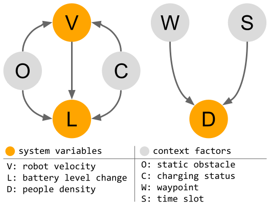
Decision Making
The framework also makes a crucial go/no-go decision.
It checks if a task can be completed without the battery falling below a critical threshold.
If not, the task is aborted to prevent failure.
Simulation Experiments
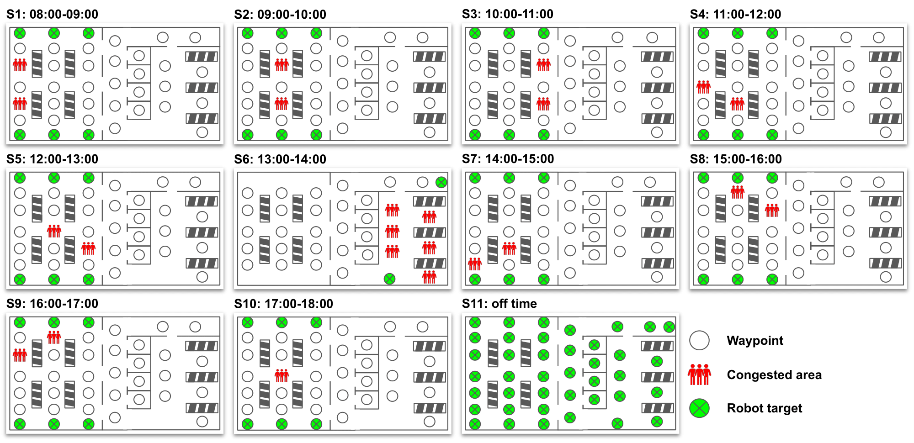
The framework's performance was evaluated in a simualed warehouse-like environment modelling a typical
warehouse day shift, which was divided into 11 distinct scenarios.
Each scenario featured unique worker congestion patterns corresponding to different times of day.
The causality-based approach was then benchmarked against a baseline navigation method
that relies on a shortest-path heuristic.
Causal Discovery
Data was collected from the 11 scenarios simulated in PeopleFlow
and fed into the framework's learning pipeline. This process had two main steps:
first, to reconstruct the underlying causal model, and second, to learn the
conditional probability distributions for each node in the discovered causal graph.
Note: This causal model was used for both the simulation and real-world experiments.
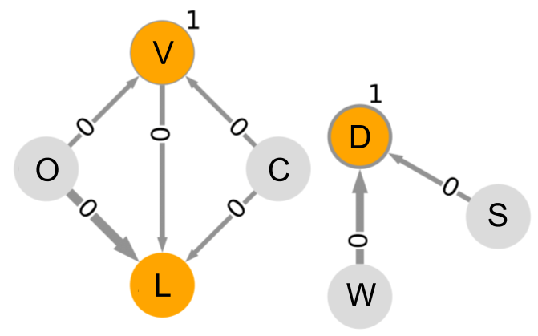
Non-causal vs Causal
Here are two examples extracted from the non-causal vs. causal comparison.
The blue line represents the path chosen by the robot to reach the target position (green sphere).
The non-causal approach always chooses the shortest path regardless of congested areas.
In contrast, the causal approach chooses paths that prioritise human safety and robot task efficiency over travelled distance.
Efficiency 🚀
The results show a dramatic improvement in task efficiency.
By anticipating and avoiding congested areas, our causal approach enabled the robot to successfully complete 89% of
its tasks, compared to only 55.9% for the baseline. This intelligence also led to a significant reduction in wasted time
and battery power. While the baseline approach wasted nearly 40% of its battery on failed tasks, our method used over 92%
of its battery effectively on tasks that were successfully completed.
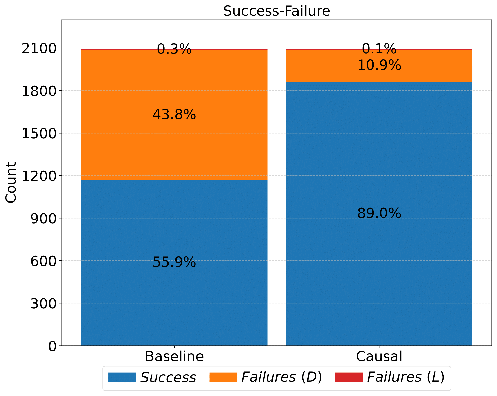
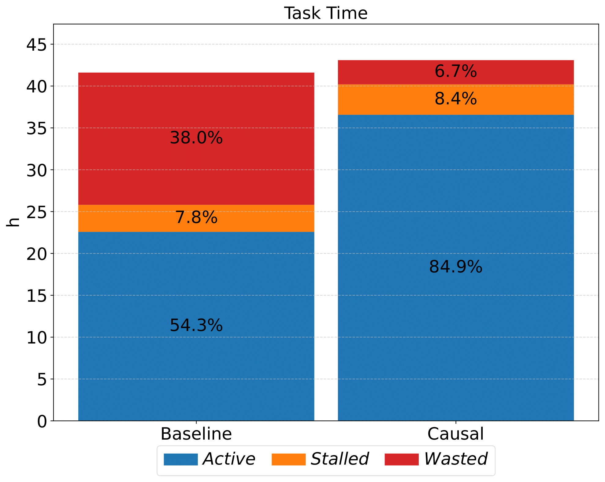
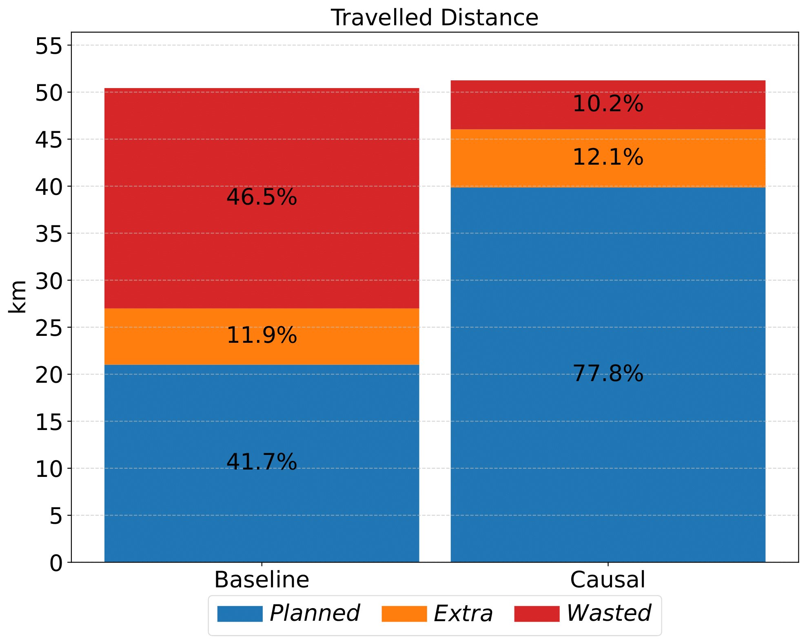
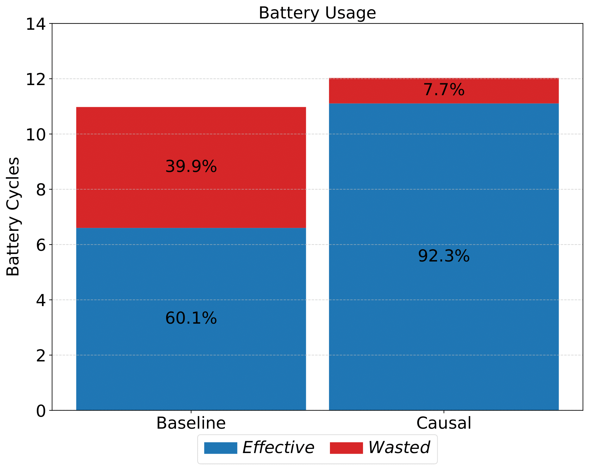
Safety ⚠️
Our framework significantly enhances human safety in the shared human-robot environment.
The baseline approach, which often chose the shortest but busiest paths, resulted in 182 collisions with humans.
In contrast, our causality-aware robot was involved in only 27 collisions. Furthermore, our approach ensures
the robot maintains a safer distance from people.
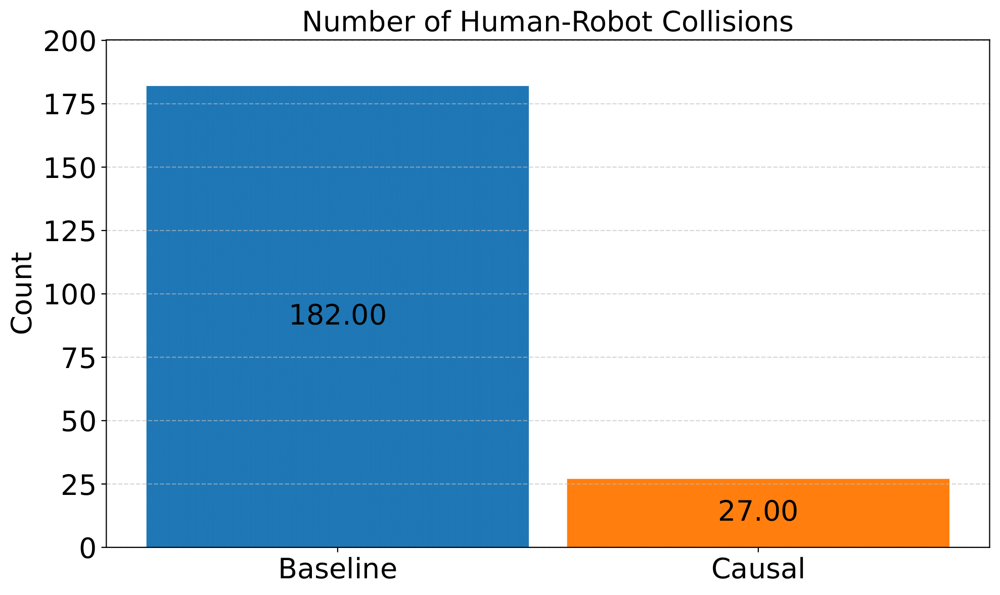
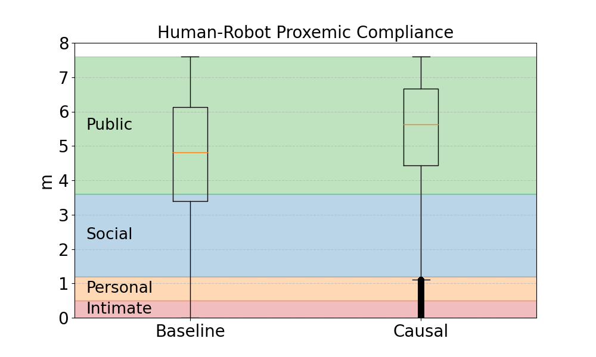
Real-World Experiments
The framework was also evaluated in a real-world setting at the University of Lincoln (UK).
Two scenarios were staged to qualitatively test the effectiveness of our approach when deployed
on a real TIAGo robot:
a busy poster session in a corridor and a social event in a kitchen.
Fifteen participants took part in the data collection for the learning pipeline of our causal framework.
Scenario 1: Poster Session
Learning
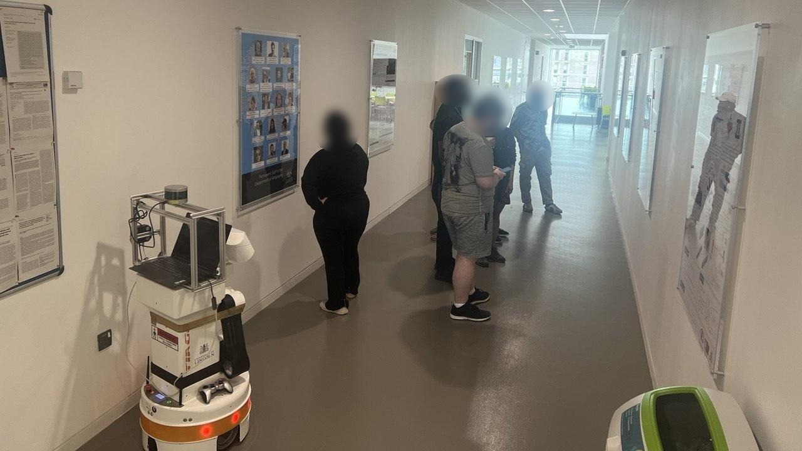
By exploiting the causal model from the simulation experiments
(specifically the W ⟶ D ⟵ S relationship),
data was collected from the
poster session scenario.
This was used to learn the new conditional probability distributions for each node in the causal graph.
The map shows the waypoints in the corridor where the poster session took place. This area had
a higher people density compared to the other waypoints in the environment.
Inference
Robot Task: Navigate from the starting pink waypoint to the target green waypoint.
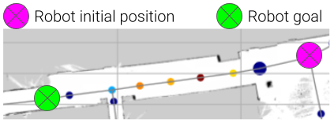
Non-causal approach (baseline)
Causal approach (Our)
The non-causal approach uses an A* algorithm with a shortest-path heuristic.
This directs the robot straight into the crowded corridor where the poster session is taking place.
As a result, the robot cannot find enough space to navigate and ultimately fails the task.
In contrast, our causal approach leverages its knowledge of the relationship between the contextual factor time of day (S) = "poster session"
and the resulting people density (D). It correctly identifies the corridor as a congested area and chooses a longer but clearer path.
This alternative route is ultimately more efficient, as the robot can complete its task, and safer for the people at the poster session.
Scenario 2: Social Event
Learning
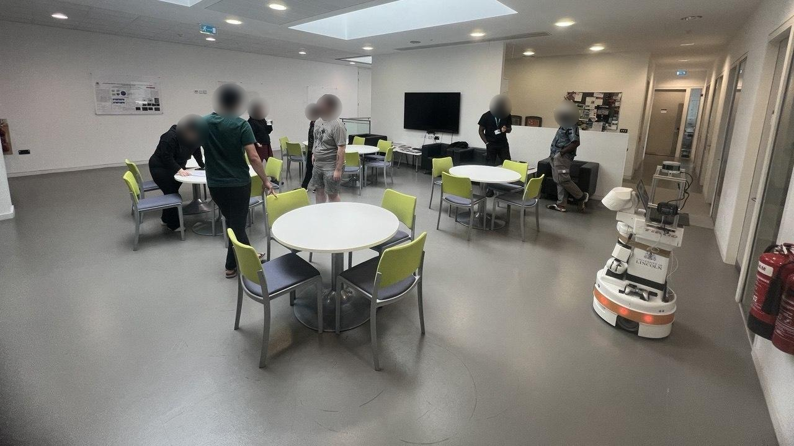
Similarly, for the social event scenario,
data was collected using the same causal model (the W ⟶ D ⟵ S relationship).
The goal was to again update the model's parameters, this time with data from a different real-world interaction.
The corresponding map displays the kitchen waypoint where the event was held. As expected,
this location shows a higher concentration of people than the other areas in the environment.
Inference
Robot Task: Navigate from the starting pink waypoint to the target green waypoint.
Non-causal approach (baseline)
Causal approach (Our)
Without causal reasoning, the baseline approach again fails. It attempts to take the shortest path directly through the kitchen,
where the crowd from the social event obstructs its route and causes the task to fail.
The causal approach, however, correctly predicts that a "social event" time slot will lead to high people density (D)
in the kitchen. By knowing this, it chooses an alternative route that bypasses the congestion. While physically longer,
this path is ultimately safer for the people at the event and more efficient, ensuring the robot
successfully completes its task.
BibTeX and useful links
Causality-enhanced Decision-Making for Autonomous Mobile Robots in Dynamic Environments
@article{castri2025causality,
title={Causality-enhanced Decision-Making for Autonomous Mobile Robots in Dynamic Environments},
author={Castri, Luca and Beraldo, Gloria and Bellotto, Nicola},
journal={arXiv preprint arXiv:2504.11901},
year={2025}
}